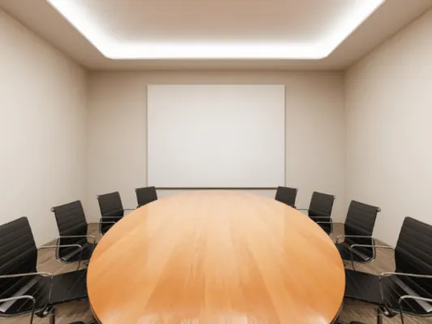
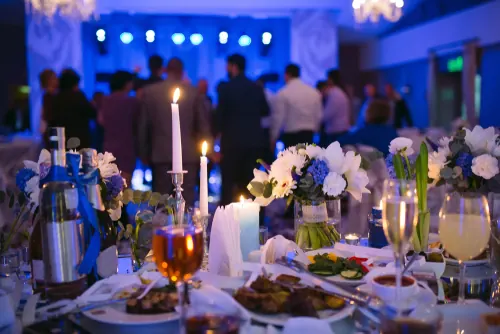
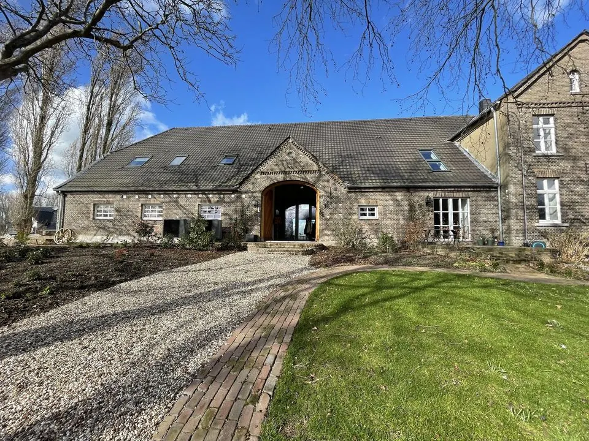
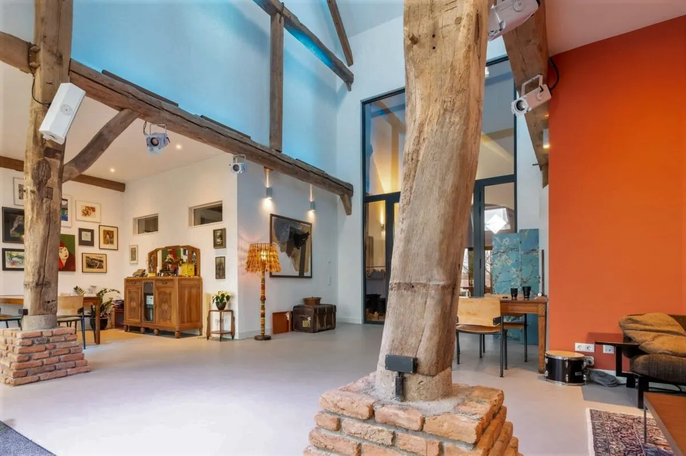
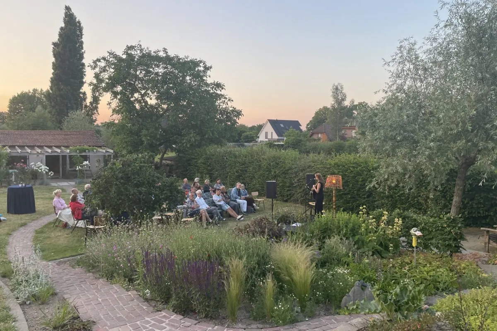
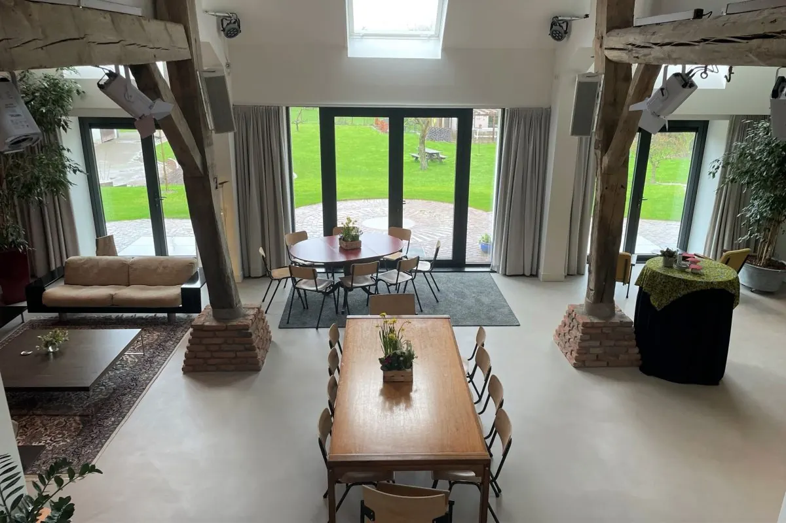
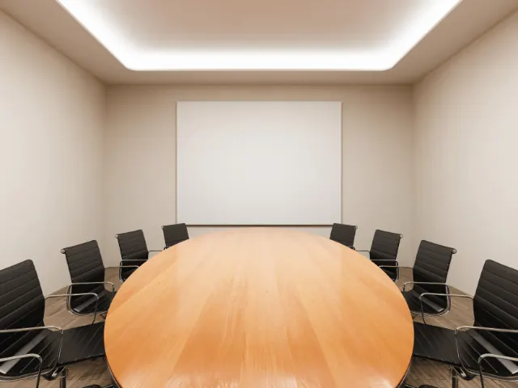
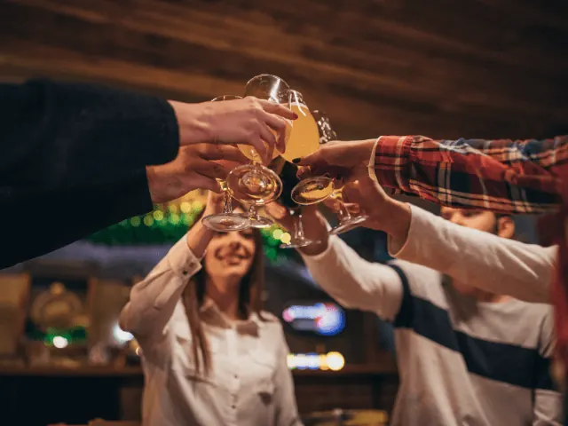

7x een zaal huren in Nijmegen
Gepubliceerd op 28 december 2022, bijgewerkt op 21 oktober 2026
Onderdeel van de gids Trouwen in Nijmegen en Zaal huren in Nijmegen

In de bruisende stad Nijmegen is van alles te doen. Voor zowel inwoners, studenten als toeristen is het niet nodig om voor festiviteiten of werkgerelateerde zaken de stad te verlaten. Ga je binnenkort trouwen en zoek je nog een mooie locatie? Of heb je voor je werk een geschikte vergaderruimte nodig? Nijmegen heeft het allemaal. Hierbij maakt het niet uit of je met een kleine of grote groep bent en of je een binnen- of buitenlocatie zoekt. Wie een zaal wil huren in Nijmegen treft hieronder een overzicht aan met de beste locaties.

Zaalverhuur bij De Brauerij – Unieke Locatie in Kranenburg, Nabij Nijmegen
Bent u op zoek naar een sfeervolle locatie voor uw bijeenkomst, evenement of culturele activiteit? De Brauerij in Kranenburg biedt een unieke ruimte in een monumentale boerderij, ideaal voor zowel zakelijke als culturele doeleinden. Gelegen op slechts 12 kilometer van Nijmegen, combineert deze bijzondere plek historie met moderne faciliteiten.
Voor Bedrijven & Organisaties
Organiseert u een vergadering, brainstormsessie, workshop of training? De Brauerij biedt een inspirerende omgeving weg van de drukte, compleet met een professionele geluidsinstallatie, theaterlicht, een presentatiescherm, Wifi en vaste netwerkaansluitingen. Catering, zoals een heerlijke lunch en onbeperkte koffie en thee, is inbegrepen.
Voor Evenementen & Particuliere Feesten
Zoekt u een locatie voor een verjaardag, jubileum, receptie of ander feest? De Brauerij biedt een warme, intieme sfeer met ruimte voor tot 50 gasten. Dankzij de flexibele indeling en sfeervolle ambiance is deze plek perfect voor een onvergetelijke viering.
Voor Culturele Activiteiten & Concerten
Als cultureel podium verwelkomt De Brauerij regelmatig kleinschalige concerten, lezingen en theatervoorstellingen. De zaal beschikt over een podium (3 x 2 meter) en professionele licht- en geluidsvoorzieningen, waardoor artiesten optimaal kunnen presteren en bezoekers kunnen genieten van een unieke, intieme sfeer.
Waarom Kiezen voor De Brauerij?
✅ Unieke historische locatie met moderne faciliteiten
✅ Geschikt voor zakelijke, feestelijke en culturele evenementen
✅ Volledig uitgerust met techniek, cateringopties en comfortabele voorzieningen
✅ Centrale ligging in Kranenburg, op korte afstand van Nijmegen
Interesse in zaalhuur? Neem vrijblijvend contact op met Joost Brauer en bespreek de mogelijkheden. Hij denkt graag met je mee hoe je van jou evenement een succes kan maken!




Bruiloft vieren in zaal Nijmegen
Gelukkig wordt er nog steeds volop getrouwd. Een heugelijke gebeurtenis die je natuurlijk graag met je familie en vrienden wilt vieren. Een bruiloft vergt veel voorbereiding en één daarvan is het zoeken van een geschikte locatie. Wil jij graag een zaal huren in Nijmegen om ’s avonds heerlijk met al je geliefden én live muziek uit je dak te gaan? Kies dan voor Moeke Nijmegen. Door de verschillende ruimtes kun jij hier je bruiloft met een intiem gezelschap vieren of juist met een grote groep. Moeke Nijmegen vind je aan de Willem van Arenbergstraat 6. Door de centrale ligging is deze locatie goed bereikbaar.

Vergaderzaal huren in Nijmegen
Niet elk bedrijf beschikt over een geschikte vergaderruimte. Zeker als er mensen van buiten het bedrijf deelnemen aan de vergadering, wordt de groep al vrij snel groot. Het is handig om dan een ruimte te huren in Nijmegen. Een speciale vergaderruimte huren in Nijmegen kan dan ook bij Lindenberg. Deze vergaderruimte ligt heel mooi centraal in de stad en beschikt over zeven verschillende zalen. Een zaal huren in Nijmegen kan hier dan ook voor twee tot 340 personen. Deze veelzijdige vergaderlocatie is gevestigd op de Ridderstraat 23. Met 1000 parkeerplaatsen is het altijd mogelijk om vlak bij de ingang te parkeren.
Buitenlocatie
Wil je een buitenlocatie huren in Nijmegen? Dan moet je toch echt bij Buitengast aan de Persingensestraat 13 in Persingen zijn. Op ongeveer 6 kilometer van de prachtige stad Nijmegen kun je hier terecht voor business evenementen, jubileumfeesten, theatervoorstellingen en zelfs uitvaarten. Creëer je eigen sfeer en creativiteit en geniet van het erf en de wei; groene en rustgevende buitenlocaties. Een buitenlocatie huren in Nijmegen is een echte beleving bij Buitengast. Midden in de natuur en een prachtig decor van stuwwal en polder.
Zaal huren voor klein budget
Het leven is duur en prijzen schieten de pan uit. Toch zijn er weleens van die momenten waarbij je een goedkope zaal wilt huren in Nijmegen. Voor een sportactiviteit, een verjaardag of een kinderfeestje. Uiteraard is jouw woning hier te klein voor, maar gelukkig biedt Yoo Sin aan de Heidebloemstraat 201 een mooie oplossing. Via de verhuurbalie van de Gemeente kun je hier een goedkope zaal huren in Nijmegen. Bij mooi weer mag je tevens gebruik maken van het grasveld naast de zaal. Ideaal voor een leuke buitenactiviteit.

Café huren
Jarig of een ander feestje? Zin om eens lekker uit te pakken, maar wil je de troep niet in je eigen huis? Dan kun je prima een café afhuren in Nijmegen. Hoeveel mensen nodig jij uit? Of het er nou 20 zijn of maximaal 250, bij het sfeervolle en gezellige café The Shuffle ben jij altijd welkom. Dit prachtige authentieke pand vind je aan de Berg en Dalseweg 200. De locatie is goed bereikbaar en heeft voldoende parkeergelegenheid. Wil je gebruik maken van de gratis feestruimte voor 20 tot 50 personen? Informeer dan bij Feestverhuur Nijmegen om een tap te huren in Nijmegen.
Consumptie verplicht bij zaal huren in Nijmegen?
Niet iedereen die een zaal nodig heeft, wil vastzitten aan een verplichte afname van consumpties. Wil je dan ook een zaal huren in Nijmegen waarbij je eigen eten en drinken meeneemt? Boek dan een ruimte bij de Wijkfabriek – Wolfskuil Nijmegen. Hier kun je een zaal huren zonder consumptie voor bijvoorbeeld een vergadering, een feest, een workshop of andere activiteit. De Wijkfabriek kun je vinden aan de Koninginnelaan 1 en beschikt over verschillende ruimtes. Voor een zaal huren in Nijmegen met eigen drank ben je hier aan het beste adres.
Voor kleine groep zaal huren in Nijmegen
Wil je graag jouw verjaardag, afstudeerborrel of bedrijfsfeestje buitenshuis vieren, maar ben je met een kleine groep? Kies dan voor de intieme en gezellige ruimte bij café Daen. Een kleine zaal huren in Nijmegen kan uitstekend op deze locatie, welke je vindt op de Grote Markt 23. Het pand bestaat uit drie sfeervolle ruimtes waarbij “Daen Gewelven” bij uitstek geschikt is voor een kleine groep. In de authentieke 18e-eeuwse kelder onder het café geef je jouw feestje in een unieke sfeer die je nergens anders zult vinden.
Zo kies je de juiste zaal: 5 vragen
Nijmegen heeft zalen voor elke gelegenheid. Voor een congres of symposium zijn de Stadsschouwburg, de Lindenberg en De Vereeniging goede opties. Voor een borrel kun je denken aan ’t Sfeerhuys, café Samson of Selbachs, en voor een teamuitje aan Fort Lent. Met deze vijf vragen vind je de zaal die bij jouw evenement past.
1. Hoeveel gasten passen er in de zaal?
Vraag naar de maximale capaciteit en hoe die verandert per opstelling. Een zaal voor 200 mensen aan een zittend diner past vaak meer gasten bij een staande receptie. Zorg dat er genoeg ruimte overblijft om je vrij te bewegen.
2. Welke voorzieningen zijn er?
Check of er microfoons, luidsprekers, een beamer en goede wifi zijn, zeker voor een vergadering of presentatie. Vraag ook of tafels en stoelen bij de prijs inbegrepen zijn en of er een podium is.
3. Hoe flexibel is de inrichting?
Kan de zaal in theateropstelling, U-vorm of als open ruimte voor een receptie worden ingericht? En mag je de ruimte zelf aankleden in het thema van je feest?
4. Wat kost het, en zit catering erbij?
Een zaal huren in Nijmegen kan al vanaf zo’n €19,50 per persoon, maar de prijs hangt af van je wensen en de locatie. Vraag naar extra kosten voor techniek, personeel of schoonmaak en naar de borg. Let op: bij sommige zalen is het verplicht om eten en drinken van de locatie af te nemen. Wil je je eigen drank of catering meenemen, vraag dan vooraf of dat mag. Een arrangement kost meer, maar dan wordt er ook veel voor je geregeld. Vraag bij meerdere locaties een offerte aan en vergelijk.
5. Hoe is de bereikbaarheid?
In Nijmegen kun je lang niet overal gratis parkeren. Kijk of er parkeerplaatsen bij de zaal zijn en of de locatie goed te bereiken is met het openbaar vervoer. Is de zaal ook toegankelijk voor gasten met een beperking? Denk aan een lift en een aangepast toilet.
Tot slot …
Voor een feestje of partijtje in Nijmegen hoef jij de stad niet uit. Er zijn legio mogelijkheden om je bruiloft te vieren, een vergadering te houden of je eigen coole feestje te vieren. Dat het niet lukt om een zaal te huren in Nijmegen mag dus nooit meer een excuus zijn!
De complete gids voor zaalverhuur
Zalen en locaties in Nijmegen
Zin om te beginnen? In onze bedrijvengids vind je alle 17 locaties in Nijmegen, met openingstijden, kenmerken en een kaart.
Bekijk alle 17 locaties in Nijmegen
Heb je zelf een locatie? Laat je hier uitlichten.